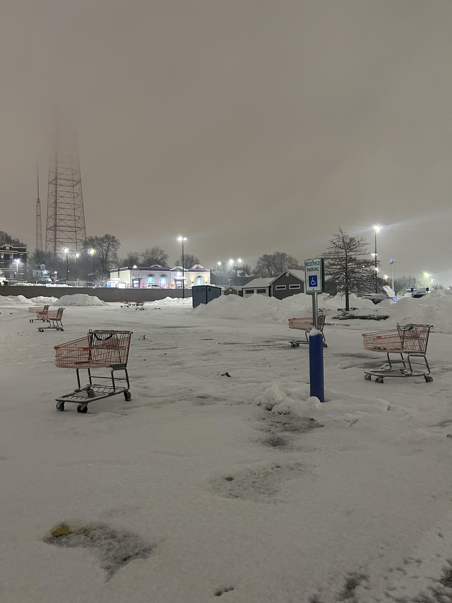

About Me
Hello! My name is Cloe Snider, my pronouns are they/them, and I love to make art. My two favorite mediums are acrylic painting and photography. In recent years I have turned my focus more to photography since it's easier to fit it into my schedule. Currently I use my iPhone to take pictures but I am looking for a film camera that I would want to use. I enjoy taking pictures of a lot of natural formations and man-made structures being taken over by nature.


Photo Subjects I Enjoy:
- Rural Buildings (i.e. barns, silos)
- Odd Cloud Formations
- Bodies of Water
- The Sky (especially at sunrise and dusk)
- Wild Animals